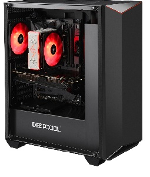
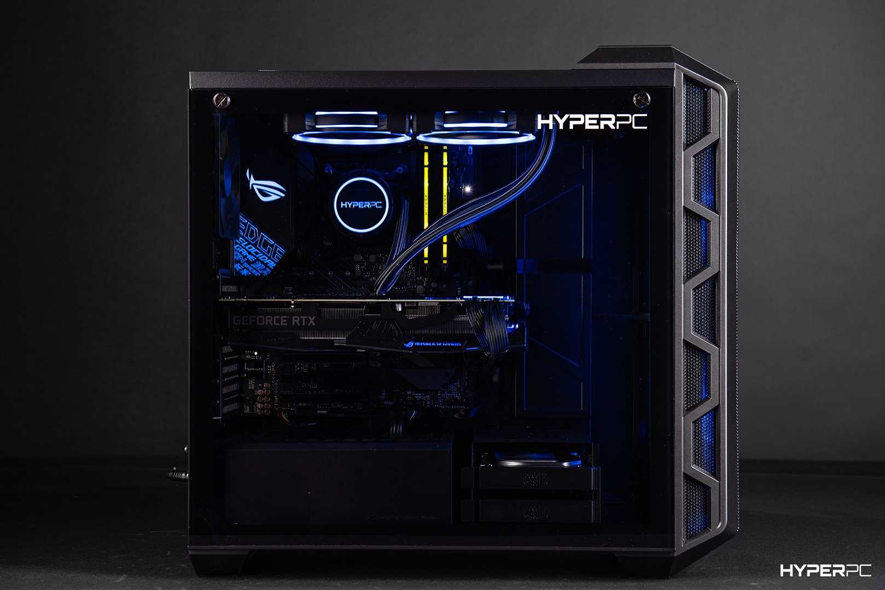
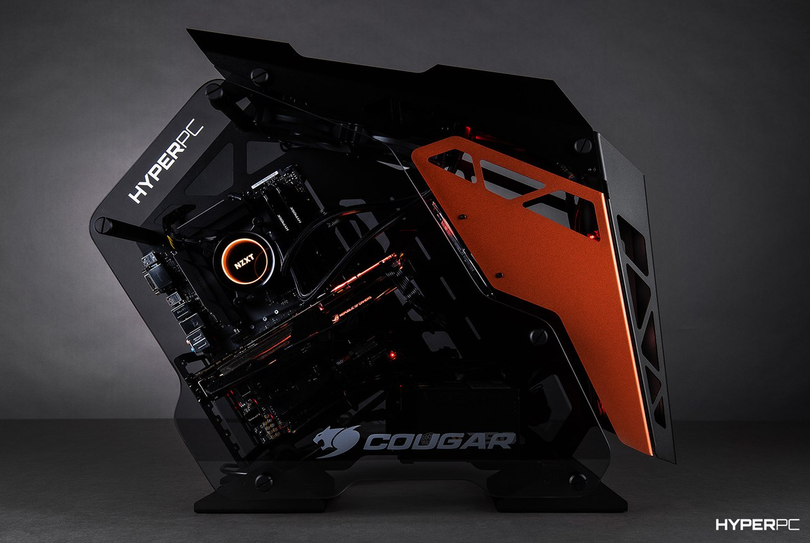

Лучшая графика
Главная гордость HYPERPC EARLKASE – находящаяся внутри видеокарта NVIDIA GeForce RTX 2060 SUPER, которая с лёгкостью запускает игры на максимальных настройках и обязательно пригодится тебе, если пожелаешь испытать счастье в VR-мирах. Революционная архитектура Turing позволяет ей использовать возможности искусственного интеллекта для создания фотореалистичной картинки, а также применять технологию трассировки лучей в реальном времени. В данном режиме игры больше задействуют ресурсы компьютера, но получают невероятно качественное освещение.
Пространтсво для манёвров
Мы не забыли, что игры всё чаще занимают десятки гигабайт, поэтому оборудовали компьютер жёстким диском, рассчитанным на хранение 2 Тб информации, а также SSD-накопителем на 240 Гб. Этого хватит, чтобы разместить целую коллекцию игр вместе с полезными программами, накопленными за долгие годы фото и видеороликами.
Один человек - один компьютер
Каждый компьютер HYPERPC EARLKASE создан нашим мастером специализирующимся на игровых системах. Процесс создания подобных решений требует высокой квалификации и педантизма. Именная плакетка на тыльной стороне компьютера подчеркивает персональный подход к каждому клиенту.
Избавьтесь от лагов
Игровой компьютер HYPERPC EARLKASE призван избавить игроков от страданий, вызванных бесконечными тормозами в одиночных играх и онлайн-баталиях. Настольный компьютер предлагает свои услуги, чтобы ты мог запускать AAA-хиты и инди-жемчужины в оптимальных настройках.

Выжимай до победного
Игровой компьютер HYPERPC PROJECT, выполненный в агрессивном геймерском стиле, приятно удивит тебя не только габаритами, но и серьёзной мощью своего железа. С этой малюткой можно уверенно одерживать победу на «ультрах» и забыть о досадных проседаниях fps.
Пламенное сердце
Под стильным корпусом скрыт продвинутый процессор девятого поколения Intel Core i7 с микроархитектурой Coffee Lake Refresh. С 16 Гб оперативной памяти и мощной видеокарты NVIDIA GeForce RTX 2070 SUPER компьютер позволяет насладиться плавным и детальным ходом игры с точной прорисовкой даже самых динамичных сцен. Никаких зависаний и тормозов!
Один человек - один компьютер
Каждый компьютер HYPERPC PROJECT создан нашим мастером специализирующимся на игровых системах. Процесс создания подобных решений требует высокой квалификации и педантизма. Именная плакетка на тыльной стороне компьютера подчеркивает персональный подход к каждому клиенту.
Не перегреется
Даже если ты не выходишь из игры целые сутки, мощное железо не пострадает от высоких температур. Продвинутая жидкостная система охлаждения отвечает за быстрый отвод тепла, а для лучшей вентиляции по всему корпусу расположены воздухозаборные отверстия. И ничто не отвлечёт тебя от боя: кулеры работают практически бесшумно.Комплектация HYPERPC PROJECT
ASUS GeForce RTX 2070 SUPER
Видеокарта
ASUS GeForce RTX 2070 SUPER Turbo
Видеокарта ASUS Turbo GeForce RTX 2070 SUPER разработана специально для компактных корпусов и любых других сценариев использования с ограниченной вентиляцией. В ней реализовано множество оптимизаций, облегчающих прохождение воздушных потоков через кожух кулера и способствующих максимально эффективному охлаждению графического процессора NVIDIA.Процессор
Intel® Core™ i7-9700F
Благодаря мощности и быстродействию технологии Intel® Turbo Boost 3.0 вы сможете сделать гораздо больше, не теряя времени на ожидание. С легкостью создавайте, редактируйте, делитесь контентом в формате 4K и смотрите на полном экране фильмы с разрешением 4K и панорамное видео.Материнская плата
ASUS TUF Z390-PLUS GAMING (WI-FI)
Материнские платы серии TUF Gaming предназначены для работы в сложных условиях и поэтому подвергаются строгим тестам, подтверждающим их высокое качество. Они созданы на основе надежных и долговечных компонентов, чтобы гарантировать стабильную работу системы во время длительных игровых сессий.Охлаждение
HYPERPC WaterCooling 240 RGB
Модель WaterCooling 240 RGB приносит технологию эффективности и тихой работы в мир систем водяного охлаждения, делая жидкостное охлаждение привлекательным выбором для тех, кто хочет разогнать процессор для максимальной производительности или охладить мощную систему ПК.Оперативная память
2 x 8GB HyperX FURY RGB DDR4-2666
Модуль памяти HyperX® FURY DDR4 RGB помогает выразить свой стиль и обеспечивает повышение производительности благодаря частоте до 2666 МГц, агрессивному дизайну и RGB-подсветке по всей длине модуля, которая обеспечивает плавные, потрясающие световые эффекты.SSD накопитель
500GB Samsung 970 EVO Plus
Твердотельный накопитель SSD M.2 2280 500Gb Samsung 970 EVO Plus реализован на контроллере Phoenix – это самый мощный контроллер для NVMe-накопителей потребительского класса, который существует на данный момент.Жесткий диск
2TB Seagate BarraCuda
Диски BarraCuda — лидеры рынка накопителей для настольных и портативных ПК по вместительности. В их ассортименте представлены модели разной емкости, так что каждый клиент сможет выбрать накопитель BarraCuda себе по карману.Блок питания
Cooler Master V750 750W
Новые блоки питания серии V построены на новой платформе, в которой применены современные схемотехнические решения позволяющие добиться высочайших показателей стабильности электропитания во всём диапазоне нагрузок.Корпус
Cooler Master MasterCase H500
Основным материалом изготовления корпуса Cooler Master MasterCase H500 является сталь, окрашенная в цвет Iron Grey. При этом лицевая панель выполнена с использованием акриловой вставки, а боковая стенка представляет собой прямоугольник из закалённого стекла с винтовым креплением.Коврик для мыши
Коврик для мыши HYPERPC Средний
Оригинальный коврик HYPERPC в подарок с каждым игровым компьютером! Матерчатый игровой коврик с покрытием, обеспечивающим невероятно точное отслеживание перемещений мыши, идеален для профессиональных геймеров.Операционная система
Microsoft Windows 10 Home Advanced
Система Windows 10 позволяет с легкостью переходить с одного устройства на другое. Она работает быстро и надежно. Внимание: операционная система поставляется в виде OEM лицензии.Подсветка
HYPERPC LIGHTBAR RGB
HYPERPC LIGHTBAR RGB позволит вам сделать красочную подсветку Вашего компьютера, используя его различные световые эффекты. Выбирайте между 16 миллионов комбинациями цвета через контроллер RGB или програмное обеспечение.Термоинтерфейс
Термопаста NOCTUA NT-H2
NT-H2 - это второе поколение удостоенного наград гибридного термокомпонента Noctua. Сочетая в себе проверенные временем функции культового NT-H1, превосходную простоту в использовании и известную долговременную стабильность с новой, отточенной формулой микрочастиц для еще более высоких тепловых характеристик, NT-H2 - это паста для энтузиастов, удовлетворяющая самым высоким требованиям. Дополнительно термопаста в комплекте не идет, а только наносится на процессор.Атрибутика
Футболка HYPERPC Размер L
Фирменная высококачественная футболка с логотипом HYPERPC в подарок с каждым игровым компьютером. Не забудьте в конфигураторе указать нужный размер футболки. Всегда в наличии размеры S, M, L, XL.Сервис HYPERPC
Первоклассное обслуживание премиум класса
Пакет HYPERPC Warranty
Гарантия
Пакет HYPERPC Warranty
Пакет HYPERPC Warranty для компьютеров HYPERPC обеспечивает до 1 года профессиональной технической поддержки.
Узнать больше
Пакет HYPERPC Delivery
Логистика
Пакет HYPERPC Delivery
Пакет HYPERPC Delivery предоставляет бесплатную доставку компьютера HYPERPC в сервисный центр, это позволит не тратить собственное время и нервы на поездки при обнаружении неисправности.
Узнать больше
Изменить
Пакет HYPERPC Service
Обслуживание
Пакет HYPERPC Service
Пакет HYPERPC Service позволяет 1 раз в течение гарантийного срока проходить комплексную настройку в которую входит: полная диагностика компьютера, чистка компьютера сжатым воздухом, обновление прошивки BIOS, полная установка свежих версий драйверов.
Узнать больше
Изменить
Пакет HYPERPC Support
Поддержка
Пакет HYPERPC Support
Компания HYPERPC производит компьютеры и устанавливает программное обеспечение, поэтому мы знаем свои системы в совершенстве. Если вам нужна помощь или вы просто хотите узнать, как использовать свой HYPERPC по максимуму, — мы всегда к вашим услугам.
Узнать больше
Изменить
Пакет HYPERPC Upgrade
Модернизация
Пакет HYPERPC Upgrade
При покупке компьютера в HYPERPC у вас появляется возможность модернизировать компьютер в течение 1-го месяца после покупки с зачетом комплектующих.
Узнать больше
Изменить
Пакет HYPERPC Overclock
Разгон
Пакет HYPERPC Overclock
Производительность современных процессоров еще пять лет назад показалась бы нам удивительной, однако сегодня ее может быть недостаточно для задач, с которыми сталкиваются пользователи.
Узнать больше
Изменить
Пакет HYPERPC Testing
Тестирование
Пакет HYPERPC Testing
Перед продажей каждый компьютер проходит комплексную проверку на выявление брака. Специальными тестовыми программами нагружаются все комплектующие Вашей новой системы. Результаты прохождения всех тестов вносятся в специальный лист отчета, который вы получаете вместе с другими документами.
Узнать больше
Изменить
Стандартный срок изготовления
Производство
Стандартный срок изготовления
Стандартный срок изготовления компьютера.
Узнать больше

Комплектация HYPERPC CONQUER
MSI GeForce RTX 2080 Ti
Видеокарта
MSI GeForce RTX 2080 Ti GAMING X TRIO
В дизайне новых моделей серии Gaming Trio черный цвет сочетается с серым цветом оружейного металла. В изящном облике устройства выделяется металлическая усилительная пластина со шлифованной поверхностью, а на передней и боковой сторонах можно увидеть роскошную полноцветную подсветку, которая настраивается и синхронизируется с подсветкой других компонентов через приложение Mystic Light.Процессор
Intel® Core™ i9-9900KF
Представляем НОВЫЕ процессоры Intel® Core™ 9-го поколения для настольных ПК — первые процессоры с разблокированным множителем для настольных ПК массовой категории. При использовании в сочетании с памятью Intel® Optane™ ускоряется загрузка и запуск игр. Благодаря тактовой частоте до 5 ГГц и 16 потоков для многозадачности вы можете максимально реализовать свой творческий потенциал в создании, редактировании и публикации контента.
Узнать больше
Изменить
MSI MPG Z390 GAMING PRO CARBON AC
Материнская плата
MSI MPG Z390 GAMING PRO CARBON AC
Превзойдите своих соперников по игре за счет уникальных инструментов MSI GAMING. Умное "железо" и программное обеспечение позволит вам оставаться на шаг впереди ваших соперников.
Узнать больше
Изменить
Noctua NH-D15
Охлаждение
Noctua NH-D15
Превосходное воздушное охлаждение, возможно лучшее на данный момент. Двойной радиатор с шестью тепловыми трубками и два обдувающих вентилятора 140мм.
Узнать больше
ИзменитьОперативная память
2 x 16GB HyperX Predator RGB DDR4-3200
Если вы всегда хотите побеждать, сверхбыстрые модули памяти HyperX Predator DDR4 обеспечат вам нужную скорость работы, а модули памяти Predator DDR4 с RGB-подсветкой не только повысят производительность вашей системы, но и придадут ей оригинальный внешний вид. С помощью технологии инфракрасной синхронизации Infrared Sync, реализованной в модулях памяти HyperX Predator DDR4 RGB, вы можете легко придать уникальный внешний вид вашему ПК и синхронизировать настройки без необходимости использования кабелей.
Узнать больше
1TB Samsung 970 EVO Plus
SSD накопитель
1TB Samsung 970 EVO Plus
Твердотельный накопитель SSD M.2 2280 1TB Samsung 970 EVO Plus реализован на контроллере Phoenix – это самый мощный контроллер для NVMe-накопителей потребительского класса, который существует на данный момент.
Узнать больше
Изменить
4TB Seagate
Жесткий диск
4TB Seagate BarraCuda
Диски BarraCuda — лидеры рынка накопителей для настольных и портативных ПК по вместительности. В их ассортименте представлены модели разной емкости, так что каждый клиент сможет выбрать накопитель BarraCuda себе по карману.
Узнать больше
Изменить
Cooler Master V850 850W
Блок питания
Cooler Master V850 850W
Новые блоки питания серии V построены на новой платформе, в которой применены современные схемотехнические решения позволяющие добиться высочайших показателей стабильности электропитания во всём диапазоне нагрузок.
Узнать больше
Изменить
COUGAR Conquer
Корпус
COUGAR Conquer
Игровой корпус Conquer на 100% соответствует уникальной ДНК Cougar, проявляющейся и в других знаменитых разработках бренда. Отличительная особенность ДНК Cougar – каркасная эстетика, несущая рама из сплава алюминия и стиль милитари. Стиль, стиль и еще раз стиль – таким предстает перед нами корпус Conquer.
Узнать больше
Изменить
Коврик для мыши HYPERPC
Коврик для мыши
Коврик для мыши HYPERPC Средний
Оригинальный коврик HYPERPC в подарок с каждым игровым компьютером! Матерчатый игровой коврик с покрытием, обеспечивающим невероятно точное отслеживание перемещений мыши, идеален для профессиональных геймеров.
Узнать больше
Microsoft Windows 10 Professional High-End
Операционная система
Microsoft Windows 10 Professional High-End
Система Windows 10 позволяет с легкостью переходить с одного устройства на другое. Она работает быстро и надежно. Внимание: операционная система поставляется в виде OEM лицензии.
Узнать больше
HYPERPC Cable Kit
Оплетка кабелей
HYPERPC Cable Kit Black/Orange
Моддинговые силовые кабели премиального класса TtMod Sleeve Cable имеют трехслойную защиту: первый слой защищает от внешних силовых воздействий, второй от влаги, а третий от окисления. Соответствует калибру 16 AWG*. Кабеля имеют низкое сопротивление и качественные коннекторы, что гарантирует минимальную просадку при нагрузке, обеспечивая максимальную надежность и стабильность работы ПК. Помимо этого, они гибкие, что весьма удобно при сборке.
Узнать больше
Термопаста NOCTUA NT-H2
Термоинтерфейс
Термопаста NOCTUA NT-H2
NT-H2 - это второе поколение удостоенного наград гибридного термокомпонента Noctua. Сочетая в себе проверенные временем функции культового NT-H1, превосходную простоту в использовании и известную долговременную стабильность с новой, отточенной формулой микрочастиц для еще более высоких тепловых характеристик, NT-H2 - это паста для энтузиастов, удовлетворяющая самым высоким требованиям. Дополнительно термопаста в комплекте не идет, а только наносится на процессор.
Узнать больше
Футболка HYPERPC
Атрибутика
Футболка HYPERPC Размер L
Фирменная высококачественная футболка с логотипом HYPERPC в подарок с каждым игровым компьютером. Не забудьте в конфигураторе указать нужный размер футболки. Всегда в наличии размеры S, M, L, XL.
Узнать больше
Изменить

Любая задача по плечу
Игровой компьютер HYPERPC CRYSTAL 680X STREAMING – геймерская машина нового поколения. Процессор Intel Core i9 и видеокарта GeForce RTX 2080 Ti позволяют тебе выбирать максимальную детализацию графики в любимых играх. Технология трассировки лучей в режиме реального времени погружает тебя в виртуальный мир, наполняя картинку ярким светом, правдоподобными тенями и другими красочными эффектами
Современный дизайн
Внушительные по характеристикам комплектующие спрятались внутри корпуса с современным дизайном и прозрачными стенками, который выгодно выделяется по сравнению с монолитными «коробками». Не лишней окажется яркая подсветка, благодаря которой системником можно любоваться и не прятать под столом.
Восхитительная графика
HYPERPC CRYSTAL 680X STREAMING оснащен современной видеокартой GeForce RTX 2080 Ti. Она поддерживает технологию NVIDIA® G-SYNC™, которая синхронизирует частоту обновления экрана с частотой вывода кадров графическим процессором. Благодаря G-SYNC™ устраняется неприятный эффект разрыва кадра и уменьшается задержка отображения.
Один человек - один компьютер
Каждый компьютер HYPERPC CRYSTAL 680X STREAMING создан нашим мастером специализирующимся на игровых системах. Процесс создания подобных решений требует высокой квалификации и педантизма. Именная плакетка на тыльной стороне компьютера подчеркивает персональный подход к каждому клиенту.
Комплектация HYPERPC CRYSTAL 680X STREAMING
AORUS GeForce RTX 2080 SUPER
Видеокарта
AORUS GeForce RTX 2080 SUPER
Видеокарта AORUS GeForce RTX 2080 SUPER рассчитана на самых взыскательных геймеров и оверклокеров, которые желают иметь в своём системном блоке настоящее произведение инженерного искусства.
Узнать больше
Изменить
Intel® Core™ i9-9900KF
Процессор
Intel® Core™ i9-9900KF
Представляем НОВЫЕ процессоры Intel® Core™ 9-го поколения для настольных ПК — первые процессоры с разблокированным множителем для настольных ПК массовой категории. При использовании в сочетании с памятью Intel® Optane™ ускоряется загрузка и запуск игр. Благодаря тактовой частоте до 5 ГГц и 16 потоков для многозадачности вы можете максимально реализовать свой творческий потенциал в создании, редактировании и публикации контента.
Узнать больше
Изменить
GIGABYTE Z390 AORUS MASTER
Материнская плата
GIGABYTE Z390 AORUS MASTER
Игровая материнская плата плата AORUS Intel Z390 с 12-ти фазным цифровым модулем питания процессора на элементной базе IR, системой охлаждения Fins-Array, технологией RGB Fusion 2.0.
Узнать больше
Изменить
HYPERPC WaterCooling 240 RGB
Охлаждение
HYPERPC WaterCooling 240 RGB
Модель WaterCooling 240 RGB приносит технологию эффективности и тихой работы в мир систем водяного охлаждения, делая жидкостное охлаждение привлекательным выбором для тех, кто хочет разогнать процессор для максимальной производительности или охладить мощную систему ПК.
Узнать больше
Изменить
8GB Corsair Vengeance RGB PRO DDR4-3200
Оперативная память
4 x 8GB Corsair Vengeance RGB PRO DDR4-3200
Разогнанные модули памяти DDR4 CORSAIR VENGEANCE RGB PRO Series обеспечат вашему ПК потрясающую динамическую RGB-подсветку с возможностями индивидуальной настройки, а также максимальную производительность для стандарта DDR4.
Узнать больше
Изменить
1TB Samsung 970 EVO Plus
SSD накопитель
1TB Samsung 970 EVO Plus
Твердотельный накопитель SSD M.2 2280 1TB Samsung 970 EVO Plus реализован на контроллере Phoenix – это самый мощный контроллер для NVMe-накопителей потребительского класса, который существует на данный момент.
Узнать больше
Изменить
6TB Seagate
Жесткий диск
6TB Seagate BarraCuda
Диски BarraCuda — лидеры рынка накопителей для настольных и портативных ПК по вместительности. В их ассортименте представлены модели разной емкости, так что каждый клиент сможет выбрать накопитель BarraCuda себе по карману.
Узнать больше
Изменить
Corsair RM850x 850W
Блок питания
Corsair RM850x 850W
Блоки питания Corsair RMx Series обеспечивают жесткий контроль напряжения, бесшумную работу, Gold-сертифицированную эффективность и полностью модульную кабельную систему.
Узнать больше
Изменить
Corsair Crystal Series 680X RGB
Корпус
Corsair Crystal Series 680X RGB Black
CORSAIR Crystal Series 680X RGB — это интеллектуальный корпус форм-фактора ATX с двухкамерной конструкцией и элементами из закаленного стекла, который не только обеспечит мощный воздушный поток для охлаждения даже наиболее требовательного ПК, но и дополнит его эффектной подсветкой.
Узнать больше
Изменить
Коврик для мыши HYPERPC
Коврик для мыши
Коврик для мыши HYPERPC Средний
Оригинальный коврик HYPERPC в подарок с каждым игровым компьютером! Матерчатый игровой коврик с покрытием, обеспечивающим невероятно точное отслеживание перемещений мыши, идеален для профессиональных геймеров.
Узнать больше
Microsoft Windows 10 Professional High-End
Операционная система
Microsoft Windows 10 Professional High-End
Система Windows 10 позволяет с легкостью переходить с одного устройства на другое. Она работает быстро и надежно. Внимание: операционная система поставляется в виде OEM лицензии.
Узнать больше
Термопаста NOCTUA NT-H2
Термоинтерфейс
Термопаста NOCTUA NT-H2
NT-H2 - это второе поколение удостоенного наград гибридного термокомпонента Noctua. Сочетая в себе проверенные временем функции культового NT-H1, превосходную простоту в использовании и известную долговременную стабильность с новой, отточенной формулой микрочастиц для еще более высоких тепловых характеристик, NT-H2 - это паста для энтузиастов, удовлетворяющая самым высоким требованиям. Дополнительно термопаста в комплекте не идет, а только наносится на процессор.
Узнать больше
Футболка HYPERPC
Атрибутика
Футболка HYPERPC Размер L
Фирменная высококачественная футболка с логотипом HYPERPC в подарок с каждым игровым компьютером. Не забудьте в конфигураторе указать нужный размер футболки. Всегда в наличии размеры S, M, L, XL.
Узнать больше
Изменить
.png)